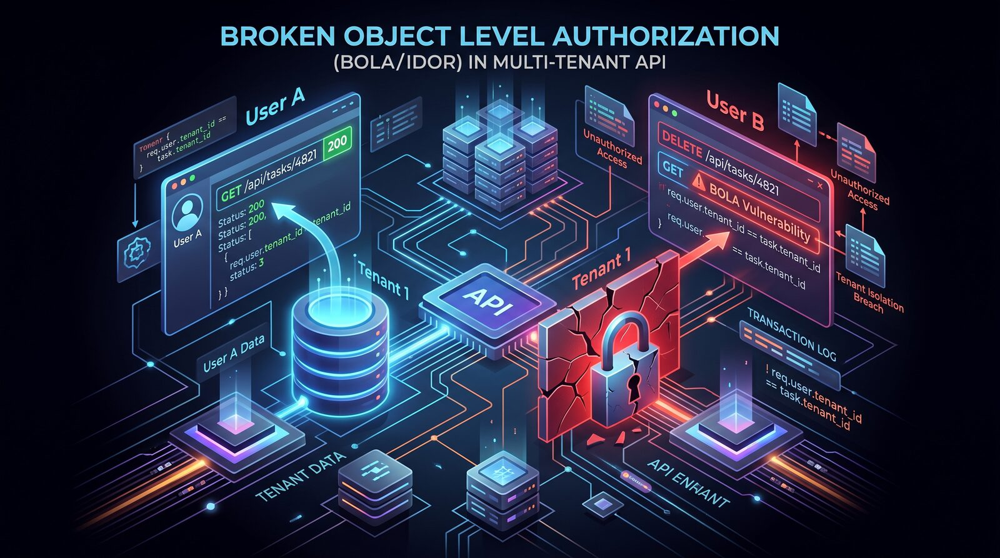

Testing for Broken Object-Level Authorization: The Access Check Most Test Suites Never Try
Why functional tests routinely miss the authorization bug that lets one customer see or change another's data, and how to test for it deliberately.
Most functional test suites for a multi-tenant application only ever log in as one account at a time. Every test confirms that a user can see their own projects, their own invoices, their own messages. What almost none of them confirm is that the same user cannot see someone else's — and that gap is exactly where one of the most common, most damaging API bugs lives.

The bug has a name: Broken Object Level Authorization, or BOLA (also called Insecure Direct Object Reference, or IDOR). It sits at the top of the OWASP API Security Top 10, and it happens whenever a server checks that a request is authenticated but not that the caller actually owns the object being requested. The fix sounds trivial once you say it out loud — "check ownership before returning the object" — which is exactly why it keeps shipping anyway: nothing in a normal functional test run ever exercises the failure.
What this looks like in practice
Imagine a team building a project-management SaaS product. A task lives at an endpoint like GET /api/tasks/4821. The endpoint correctly requires a valid session token, so an anonymous request is rejected. QA's test suite logs in as a test user, creates a task, fetches it back, edits it, deletes it — every one of those tests passes, and the feature ships. Nobody wrote a test that logs in as a second user and requests task 4821 by ID. If the endpoint pulls the task straight from the database by its ID without also checking that the task's tenant matches the caller's tenant, that second user gets someone else's task back, in full, with a 200 response.
This isn't a hypothetical failure mode. Research from APIsec Labs that reviewed 84 confirmed BOLA reports submitted through HackerOne between 2021 and 2026 found that direct object reference bugs like this one, plus a related pattern where an attacker performs a state-changing action on someone else's object, together accounted for nearly four out of five of the cases studied. The same research found that mutating requests — edits, deletes, state changes — made up close to half of all reported cases, which matters because a read-only test suite (the kind most teams have) only ever exercises the smaller half of the problem. Real incidents follow the same shape: a Nextcloud API for setting out-of-office status returned another user's private data when the username in the request was swapped, and a Mozilla account-deletion endpoint accepted a victim's email address under the attacker's own valid session because the session was never bound to the account being deleted.
A test that actually checks this
The fix for testing BOLA isn't a new tool — it's a second account. Any test that reads, writes, or deletes an object identified by an ID should run once as the object's owner (expected to succeed) and once as a different, unrelated account (expected to fail with a 403 or 404, never a 200).
def test_cannot_read_another_tenants_task(owner_client, other_client):
task = owner_client.post("/api/tasks", json={"title": "Renew contract"}).json()
task_id = task["id"]
# Owner can read their own task.
assert owner_client.get(f"/api/tasks/{task_id}").status_code == 200
# A different, authenticated user must not be able to.
resp = other_client.get(f"/api/tasks/{task_id}")
assert resp.status_code in (403, 404)
def test_cannot_delete_another_tenants_task(owner_client, other_client):
task = owner_client.post("/api/tasks", json={"title": "Renew contract"}).json()
task_id = task["id"]
resp = other_client.delete(f"/api/tasks/{task_id}")
assert resp.status_code in (403, 404)
# The task must still exist for its actual owner.
assert owner_client.get(f"/api/tasks/{task_id}").status_code == 200A useful way to scale this without writing it by hand for every endpoint is to build a small matrix: every endpoint that takes an object ID, crossed with read, update, and delete, crossed with "same owner" and "different owner." Generate the cross-account cases from the same fixtures you already use for the happy-path tests, so the ownership check gets exercised everywhere the object ID appears, including secondary routes like /api/projects/{id}/tasks/{task_id} that are easy to forget when the main /api/tasks/{id} route is already covered.
Pitfalls and limits
A couple of habits create false confidence here. Switching from sequential numeric IDs to UUIDs feels like it fixes the problem, but it only removes the easy enumeration path — it does nothing if the ID is still returned to the user anywhere (a URL, an export file, a webhook payload) and the server still skips the ownership check. The APIsec research is explicit that this is a mitigation, not a fix.
Testing only the "obvious" owning user and the clearly unrelated attacker also misses a real slice of cases. In the same dataset, roughly one in eight confirmed BOLA bugs were vertical rather than horizontal — a standard user acting on an admin-owned object, as happened when a Nextcloud user with normal privileges was able to delete an admin's storage configuration. A test matrix built only around "two peer users" won't catch that; it needs a role dimension too.
Automated security scanners are a weaker safety net here than most teams assume, because object ownership is a business-logic concept, not a pattern a generic scanner can infer from the API's shape — it has to be encoded into the test as "this ID belongs to this account," which only a team that understands the data model can write. And object lifecycle states are easy to skip: an object that's been archived, soft-deleted, or deactivated sometimes loses its authorization check along with its visible status, which is its own gap worth testing deliberately rather than assuming the same check still applies.
What to do next
Pick your three or four highest-traffic endpoints that return an object by ID, and add the paired same-owner/different-owner test to each one this week — both a read and a mutating request, not just a read. Extend your test fixtures so every suite that creates a test user also creates a second, unrelated one by default, so cross-account testing is cheap to add everywhere else. Add at least one vertical case (a standard-role user attempting an admin-owned object) alongside the horizontal ones. Finally, check how your object IDs leak: if any of them show up in exported files, webhook payloads, or shareable links, treat that as a reason to test the ownership check there too, not a reason to assume UUIDs already cover it.
Sources
Većina funkcionalnih test skupova za multi-tenant aplikaciju se uvijek prijavljuje kao samo jedan nalog. Svaki test potvrđuje da korisnik vidi svoje projekte, svoje fakture, svoje poruke. Ono što skoro nijedan ne potvrđuje jeste da taj isti korisnik ne može da vidi tuđe — a upravo u toj rupi živi jedan od najčešćih i najštetnijih API bugova.
Taj bug ima ime: Broken Object Level Authorization, ili BOLA (poznat i kao Insecure Direct Object Reference, ili IDOR). Nalazi se na vrhu OWASP API Security Top 10 liste, a javlja se kad god server provjeri da je zahtjev autentifikovan, ali ne i da onaj ko ga šalje zaista posjeduje traženi objekat. Rješenje zvuči trivijalno kad se izgovori naglas — "provjeri vlasništvo prije nego što vratiš objekat" — i upravo zato i dalje stiže u produkciju: ništa u uobičajenom funkcionalnom testiranju nikad ne izazove taj otkaz.
Kako to izgleda u praksi
Zamislite tim koji pravi SaaS proizvod za upravljanje projektima. Task se nalazi na endpoint-u poput GET /api/tasks/4821. Endpoint ispravno zahtijeva validan session token, pa se anonimni zahtjev odbija. QA test skup se prijavi kao test korisnik, kreira task, učita ga, izmijeni ga, obriše ga — svaki od tih testova prolazi i funkcionalnost ide u produkciju. Niko nije napisao test koji se prijavi kao drugi korisnik i zatraži task 4821 po ID-ju. Ako endpoint povuče task direktno iz baze po ID-ju, a ne provjeri i da li se tenant tog taska poklapa sa tenantom pozivaoca, taj drugi korisnik dobije tuđi task, kompletan, sa odgovorom 200.
Ovo nije hipotetički scenario. Istraživanje APIsec Labs-a, koje je analiziralo 84 potvrđene BOLA prijave podnesene preko HackerOne-a između 2021. i 2026. godine, pokazalo je da su bugovi direktne reference na objekat poput ovog, zajedno sa srodnim obrascem u kojem napadač izvrši akciju koja mijenja stanje tuđeg objekta, činili skoro četiri od pet analiziranih slučajeva. Isto istraživanje je pokazalo da su zahtjevi koji mijenjaju podatke — izmjene, brisanja, promjene stanja — činili skoro polovinu svih prijavljenih slučajeva. To je važno, jer test skup koji samo čita podatke (a takav ima većina timova) pokriva samo manju polovinu problema. Stvarni incidenti imaju isti oblik: Nextcloud API za postavljanje statusa odsutnosti vraćao je privatne podatke drugog korisnika kad se u zahtjevu zamijeni korisničko ime, a Mozilla endpoint za brisanje naloga prihvatao je email adresu žrtve u okviru napadačeve validne sesije, jer sesija nikad nije bila vezana za nalog koji se briše.
Test koji ovo zaista provjerava
Za testiranje BOLA-e ne treba novi alat — treba drugi nalog. Svaki test koji čita, mijenja ili briše objekat identifikovan ID-jem treba da se pokrene jednom kao vlasnik objekta (očekuje se uspjeh) i jednom kao drugi, nepovezan nalog (očekuje se odbijanje sa 403 ili 404, nikad 200).
def test_cannot_read_another_tenants_task(owner_client, other_client):
task = owner_client.post("/api/tasks", json={"title": "Renew contract"}).json()
task_id = task["id"]
# Vlasnik može da pročita svoj task.
assert owner_client.get(f"/api/tasks/{task_id}").status_code == 200
# Drugi, autentifikovani korisnik ne smije.
resp = other_client.get(f"/api/tasks/{task_id}")
assert resp.status_code in (403, 404)
def test_cannot_delete_another_tenants_task(owner_client, other_client):
task = owner_client.post("/api/tasks", json={"title": "Renew contract"}).json()
task_id = task["id"]
resp = other_client.delete(f"/api/tasks/{task_id}")
assert resp.status_code in (403, 404)
# Task mora i dalje da postoji za svog stvarnog vlasnika.
assert owner_client.get(f"/api/tasks/{task_id}").status_code == 200Koristan način da se ovo skalira, bez ručnog pisanja za svaki endpoint, jeste mala matrica: svaki endpoint koji prima ID objekta, ukršten sa čitanjem, izmjenom i brisanjem, ukršten sa "isti vlasnik" i "drugi vlasnik". Generišite slučajeve između naloga iz istih fixture-a koje već koristite za happy-path testove, tako da se provjera vlasništva izvrši svuda gdje se ID objekta pojavljuje — uključujući sporedne rute poput /api/projects/{id}/tasks/{task_id}, koje je lako zaboraviti kad je glavna ruta /api/tasks/{id} već pokrivena.
Zamke i ograničenja
Par navika ovdje stvara lažnu sigurnost. Prelazak sa sekvencijalnih numeričkih ID-jeva na UUID-jeve djeluje kao da rješava problem, ali samo uklanja lak put za nabrajanje (enumeration) — ne pomaže ništa ako se ID i dalje negdje vraća korisniku (u URL-u, export fajlu, webhook payload-u), a server i dalje preskače provjeru vlasništva. APIsec istraživanje eksplicitno kaže da je to ublažavanje, a ne rješenje.
Testiranje samo "očiglednog" vlasnika i jasno nepovezanog napadača takođe propušta stvaran dio slučajeva. U istom skupu podataka, otprilike jedan od osam potvrđenih BOLA bugova bio je vertikalan, a ne horizontalan — običan korisnik koji djeluje nad objektom koji pripada adminu, kao kad je Nextcloud korisnik sa običnim privilegijama mogao da obriše adminovu konfiguraciju storage-a. Matrica testova napravljena samo oko "dva ravnopravna korisnika" to neće uhvatiti; potrebna joj je i dimenzija uloga.
Automatski sigurnosni skeneri su ovdje slabija zaštitna mreža nego što većina timova misli, jer je vlasništvo nad objektom koncept poslovne logike, a ne obrazac koji generički skener može da zaključi iz oblika API-ja — mora se upisati u test kao "ovaj ID pripada ovom nalogu", a to može da napiše samo tim koji razumije model podataka. Lako je preskočiti i stanja životnog ciklusa objekta: objekat koji je arhiviran, soft-delete-ovan ili deaktiviran ponekad izgubi provjeru autorizacije zajedno sa svojim vidljivim statusom, što je posebna rupa koju vrijedi namjerno testirati umjesto pretpostavke da ista provjera i dalje važi.
Šta dalje
Izaberite tri ili četiri endpoint-a sa najviše saobraćaja koji vraćaju objekat po ID-ju i ove sedmice svakom dodajte par testova isti vlasnik/drugi vlasnik — i za čitanje i za zahtjev koji mijenja podatke, ne samo za čitanje. Proširite test fixture-e tako da svaki skup koji kreira test korisnika po defaultu kreira i drugog, nepovezanog, kako bi testiranje između naloga bilo jeftino dodati svuda. Pored horizontalnih, dodajte barem jedan vertikalni slučaj (korisnik sa običnom ulogom pokušava pristup objektu koji pripada adminu). I na kraju, provjerite kuda vam cure ID-jevi objekata: ako se neki pojavljuju u export fajlovima, webhook payload-ima ili linkovima za dijeljenje, to je razlog da i tamo testirate provjeru vlasništva, a ne razlog da pretpostavite da UUID-jevi to već pokrivaju.